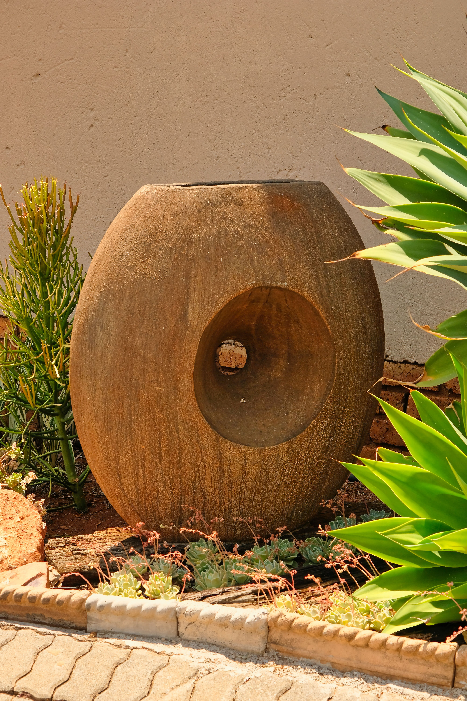

In This Article
Saving water in the garden does not mean allowing plants to suffer. It means understanding where water is genuinely needed, reducing avoidable losses, and matching irrigation to plants, soil, weather, and season.
Introduction
Saving water in the garden does not mean allowing plants to suffer. It means understanding where water is genuinely needed, reducing avoidable losses, and matching irrigation to plants, soil, weather, and season. This guide focuses on practical decisions that can be applied in an ordinary home without turning the subject into an expensive or complicated project. The goal is to understand where the biggest opportunities are, make sensible changes, and build habits that remain useful over time.
Understand Where Garden Water Goes
Saving water begins with understanding how it moves through the garden. Some moisture reaches roots, while some evaporates from exposed soil, runs away from compacted ground, lands on paths, or is lost because irrigation continues longer than necessary. Spend several days observing the garden before changing equipment. Notice which areas dry quickly, which remain damp, where water collects after rain, and which plants show stress first. This simple assessment makes later decisions more precise.
A garden rarely needs identical watering everywhere. A sunny border exposed to wind can dry much faster than a shaded bed near a wall. Containers usually change moisture more quickly than plants growing in the ground. Dividing the garden into zones according to exposure, soil, and plant needs allows you to direct water where it is useful instead of treating the entire property as one uniform area.
Water at a More Effective Time
Watering during the cooler part of the day can reduce unnecessary evaporation. Early morning is often practical because plants and soil can receive moisture before the hottest period arrives. Local climate matters, so the best schedule should reflect temperature, humidity, rainfall, restrictions, and the species being grown rather than following one universal rule.
Timing also means avoiding automatic watering immediately after useful rainfall. If you use an irrigation controller, check whether it can be paused or adjusted according to weather. If you water manually, inspect the soil first. Skipping a session when the root zone is already adequately moist is one of the simplest ways to reduce waste without depriving plants.
Check Soil Moisture Before Watering
The appearance of the soil surface can be misleading. A dry top layer does not always mean the root zone is dry. Check a little below the surface with a finger or an appropriate moisture-checking method before adding water. Over time, you will learn how quickly different beds and containers dry under different weather conditions.
This habit is particularly valuable for large pots. Container material, size, drainage, plant density, and sun exposure all affect moisture loss. Instead of watering every pot for the same number of seconds, group containers with similar needs and inspect them regularly. A more informed routine can save water while improving plant care.
Improve the Soil's Ability to Use Water
Soil structure influences whether water enters gradually, runs across the surface, or remains trapped around roots. Compacted soil may absorb water poorly, while very fast-draining soil may require a different management strategy. Learn the characteristics of your soil before adding amendments, and make improvements gradually according to the plants and local conditions.
Organic matter can support soil structure when it is appropriate for the site, but more is not automatically better. The objective is a healthy root environment with suitable drainage and moisture retention. Avoid trying to transform the soil overnight. Small, informed improvements combined with good planting choices are usually easier to maintain.

Use Mulch Where Appropriate
A suitable mulch layer can reduce direct evaporation from bare soil, moderate temperature changes, and help suppress weeds that compete for moisture. Organic or mineral materials may be used depending on the design and plants. Apply mulch appropriately for the site and avoid piling it directly against trunks or plant crowns.
Mulch does not eliminate the need to monitor moisture. In fact, because the surface may look different after mulching, it becomes even more important to check conditions below it. Treat mulch as one part of a broader water-management plan rather than as a substitute for observation.
Choose Plants That Fit the Climate
Plant selection has a major influence on long-term water use. Species adapted to local temperatures, rainfall patterns, and seasonal conditions are generally easier to maintain than plants that constantly struggle with the climate. This does not mean a garden must contain only one type of plant; it means choosing varieties whose requirements realistically match the site.
Before buying, check mature size as well as water needs. A plant that outgrows its position may require frequent pruning and can compete with nearby plants. Good planning reduces both maintenance and resource use. Local horticultural references can help identify species suited to your region.
Group Plants With Similar Water Needs
Hydrozoning, or simply grouping plants according to similar moisture requirements, makes watering more efficient. Plants that prefer drier conditions should not share the same irrigation routine with plants that require consistently greater moisture. Separating these needs allows each area to receive a more appropriate amount.
This principle works in containers too. Keeping thirsty plants together and drought-tolerant plants together simplifies inspection and reduces accidental overwatering. It also makes it easier to adjust the garden during seasonal changes because you can modify one zone without affecting every plant.
Use Drip Irrigation Carefully
Drip systems can deliver water close to the root area and reduce overspray onto paths, walls, and unused ground. Their efficiency still depends on design, maintenance, and scheduling. Emitters can clog, lines can move, and a system can run too long. Inspect it periodically rather than assuming automation guarantees efficiency.

Position emitters according to the plant and update the layout as plants mature. A young shrub and an established shrub do not occupy the same root area. When a garden changes, irrigation should change with it. Periodic checks can reveal leaks and areas receiving more water than intended.
Avoid Watering Paths and Hard Surfaces
Watch the garden while irrigation is operating. Sprinklers that repeatedly wet paving, fences, walls, or empty areas are using water without benefiting roots. Adjust heads, repair damaged components, and change the watering pattern where necessary. Small corrections across several zones can produce meaningful savings.
Runoff is another sign that water is being applied faster than the soil can absorb it. Depending on the site, shorter watering cycles with time for infiltration between them may work better than one long session. The appropriate approach depends on soil, slope, equipment, and local guidance.
Collect Rainwater Responsibly
Where local rules and conditions allow it, captured rainwater can supplement garden watering. A simple system may collect water from a suitable roof surface into a purpose-designed container. The system should be stable, covered or protected as appropriate, and maintained to avoid contamination, mosquito breeding, overflow problems, and unsafe access.
Rainwater collection should be planned rather than improvised. Check local regulations, choose equipment intended for the purpose, and direct overflow safely. Even a modest amount of stored rainwater can be useful for selected containers or beds during dry periods, but it should be managed with hygiene and safety in mind.
Reduce Competition From Weeds
Weeds use water too. Removing unwanted growth before it becomes established reduces competition around garden plants and makes irrigation easier to target. Regular light weeding is generally more manageable than waiting until dense growth covers the soil.

Do not leave large areas of disturbed bare soil unnecessarily. Depending on the garden, suitable groundcovers or mulch can reduce opportunities for weeds while helping protect the soil surface. Choose solutions that fit the planting design and climate.
Pay Extra Attention to Containers
Containers can lose moisture quickly because their root zone is limited and exposed to air and heat. Large pots may behave differently from small ones, and dark containers in direct sun can become especially warm. Place containers according to plant requirements and check them individually during hot or windy weather.
Good drainage remains essential even when conserving water. The objective is not to keep roots permanently saturated but to provide moisture efficiently. Use an appropriate potting medium, make sure drainage holes function, and consider whether the container size is suitable for the mature plant.
Adapt the Routine to the Seasons
Water demand changes throughout the year. A schedule that worked during the hottest month may waste water during cooler or wetter periods. Review irrigation settings and manual habits whenever the season changes significantly. Rainfall, temperature, daylight, wind, and plant growth all influence demand.
Keep simple notes about major seasonal adjustments. Recording when irrigation was reduced, increased, or paused can help you make better decisions the following year. The goal is not perfect prediction but a routine that responds to real conditions.
Create a Weekly Water-Saving Check
Once a week, walk through the garden and look for leaking hoses, displaced emitters, wet paving, blocked drainage, stressed plants, and unusually damp soil. This short inspection can prevent small problems from continuing unnoticed for weeks.
Also review whether new plants or recently moved containers have changed the watering needs of a zone. Gardens are living systems, so an efficient setup is never completely finished. Small adjustments keep the system aligned with the landscape as it develops.
Design Future Changes Around Lower Water Demand
When adding a new bed or redesigning an old area, consider water use before purchasing plants. Choose suitable species, improve soil where necessary, group similar needs, and decide how watering will reach roots. Planning these details at the beginning is easier than correcting an inefficient layout later.
Hardscape and shade can also influence water demand. A thoughtful balance of planted areas, permeable surfaces, shade, and circulation can create an attractive garden without requiring every square meter to be heavily irrigated.
Frequently Asked Questions
How often should I water my garden?
There is no universal schedule. Frequency depends on species, soil, weather, season, root depth, and whether plants are in containers or the ground. Check actual moisture and local guidance rather than watering automatically.
Does watering in the morning save water?
Cooler conditions can reduce evaporation compared with the hottest part of the day, and morning watering is often practical. Local climate and plant requirements should still guide the final schedule.
Is drip irrigation always efficient?
It can be efficient when correctly designed and maintained, but leaks, poor emitter placement, and excessive run time can still waste water. Inspect the system regularly.
Can I use rainwater in the garden?
Rainwater collection can be useful where permitted, but the system should be designed, covered, maintained, and operated safely according to local rules and conditions.
What is the easiest first step?
Check soil moisture before watering and stop watering hard surfaces. These two habits require little investment and can reveal immediate opportunities to reduce waste.
Conclusion
An efficient garden uses observation before irrigation. Check soil moisture, group plants with similar needs, improve soil appropriately, maintain irrigation equipment, use mulch where suitable, and adjust routines as seasons change. These habits can reduce unnecessary water use while supporting a healthy, attractive garden. Start with the easiest changes, monitor the results, and improve the system gradually.
Create a Simple Garden Water Audit
A monthly water audit can be very simple. Walk through each garden zone while the irrigation system or hose is being used and write down anything that looks inefficient. Look for runoff, leaks, overspray, clogged emitters, unusually wet patches, dry areas, and plants whose needs no longer match the zone. Then correct one issue at a time and observe the result.
If household water bills provide usage information, compare similar periods rather than isolated months because weather and occupancy can change consumption. The purpose of the audit is not to chase a perfect number but to identify avoidable waste and make the garden easier to manage.
Create a Simple Garden Water Audit
A monthly water audit can be very simple. Walk through each garden zone while the irrigation system or hose is being used and write down anything that looks inefficient. Look for runoff, leaks, overspray, clogged emitters, unusually wet patches, dry areas, and plants whose needs no longer match the zone. Then correct one issue at a time and observe the result.
If household water bills provide usage information, compare similar periods rather than isolated months because weather and occupancy can change consumption. The purpose of the audit is not to chase a perfect number but to identify avoidable waste and make the garden easier to manage.